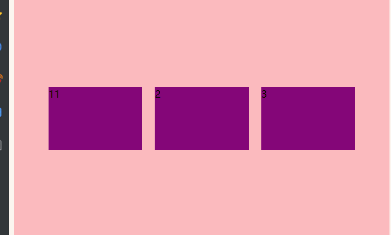
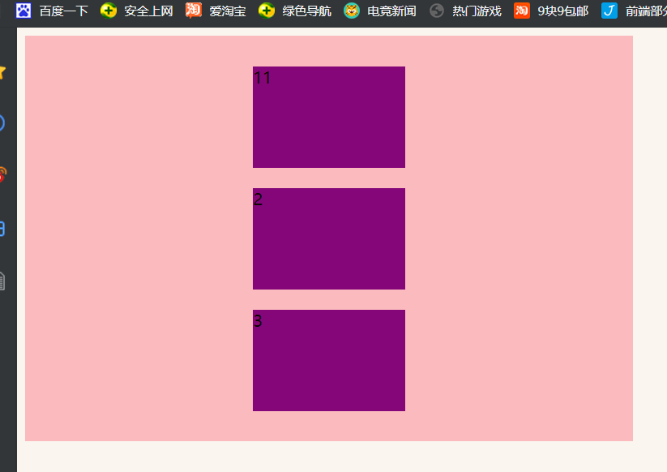
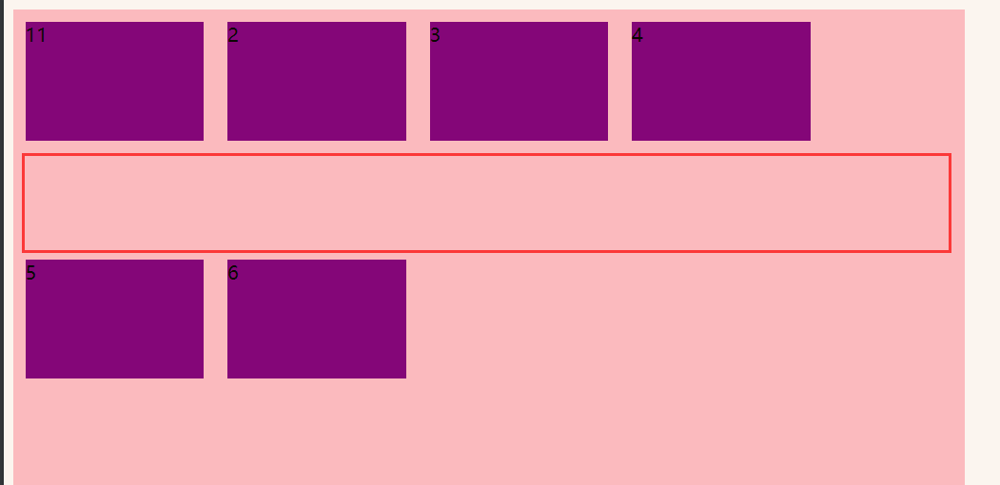
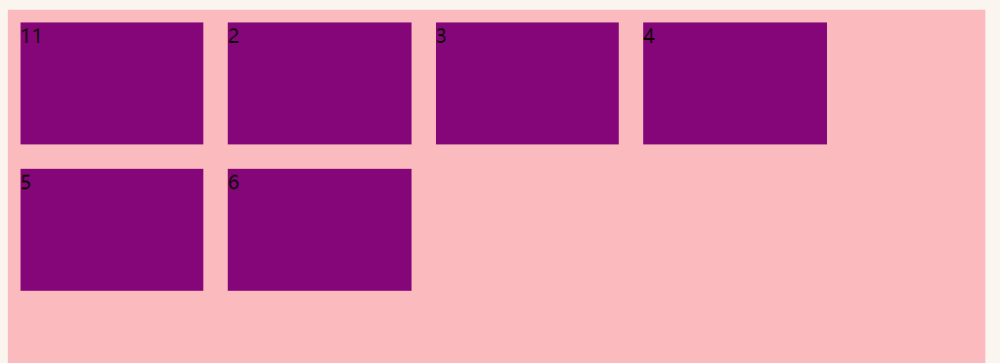

1. git上传项目到码云(gitee)
码云官方：https://gitee.com/help/articles/4114
使用成功：https://www.jianshu.com/p/287ab9f46035
如果本地仓库出错，可以马上再另外创建文件夹，再建一个即可；
这不是hexo+next，随便新建，目前；2020-8-10 15:21:50
码云官方：https://gitee.com/help/articles/4114
使用成功：https://www.jianshu.com/p/287ab9f46035
如果本地仓库出错，可以马上再另外创建文件夹，再建一个即可；
这不是hexo+next，随便新建，目前；2020-8-10 15:21:50
https://www.bilibili.com/video/BV14J4114768?p=416
传统布局
flex弹性布局
1 | <div> |
…
后面的笔记没法做，看视频才效果好；
1 | <!DOCTYPE html> |
https://www.bilibili.com/video/BV14J4114768?p=417
1.flex是flexible[^4] Box 的缩写，意为“弹性布局”，用来为盒状模型提供最大的灵活性，任何一个容器都可以指定为flex布局。
1.2注意：
当我们为父盒子设为flex布局以后，子元素的float、clear和vertical-align属性将失效。
float: 不需要，flex布局可以把盒子弄在一行；
同样的，清楚浮动的clear也不需要，同时也失效；
浮动并不完美，flex才是最完美的；
vertical-align：同样是因为，flex布局有垂直居中的功效，所以也没用与失效；2021-3-7 14:06:02
伸缩布局 = 弹性布局 = 伸缩盒布局 = 弹性盒布局 = flex布局
这些布局都叫：flex布局；
2.采用Flex布局的元素，称为flex容器（flex container），简称“容器”。它的所有子元素自动称为容器成员，称为Flex项目（flex item)，简称“项目”。
总结flex布局原理：通过给父盒子添加flex属性，来控制子盒子的位置和排列方式。
1.以下由6个属性是对父元素设置的
flex-direction: 设置主轴的方向
direction
英 [dəˈrekʃn] 美 [dəˈrekʃn]
n.方向;方位;趋势;动向;方面
justify-content: 设置主轴上的子元素排位方式
justify
英 [ˈdʒʌstɪfaɪ] 美 [ˈdʒʌstɪfaɪ]
v.证明…正确(或正当、有理);对…作出解释;为…辩解(或辩护);调整使全行排满;使每行排齐;使齐行
content
英 [ˈkɒntent , kənˈtent] 美 [ˈkɑːntent , kənˈtent]
n.所容纳之物;所含之物;内容;(书的)目录，目次;(书、讲话、节目等的)主题，主要内容
adj.满意;满足;愿意
v.满足;满意;知足;使满意;使满足
flex-wrap[^1]: 设置子元素是否换行
align[^2]-content：设置侧轴上的子元素的排列方式（多行）
align[^2]-items[^3]：设置侧轴上的子元素排位方式（单行)
flex-flow：复合属性，相当于同时设置了flex-direction和flex-wrap
1.主轴与侧轴
在flex布局中，是分为主轴和侧轴两个方向，同样的叫法有：行和列、x轴和y轴；
2.属性值
flex-direction属性决定主轴的方向（即项目的排列方向）
注意：主轴和侧轴是会变化的，就看flex-direction设置谁为主轴，剩下的就是侧轴。而子元素是跟着主轴来排列的
| 属性值 | 说明 |
|---|---|
| row | 默认值从左到右 |
| row-reverse[^5] | 从右到左 |
| column[^6] | 从上到下 |
| column-reverse | 从下到上 |
https://www.bilibili.com/video/BV14J4114768?p=419&spm_id_from=pageDriver
0.设置主轴上的子元素排列方式
1.justify[^8]-content属性定义了项目再主轴上的对齐方式
注意：使用这个属性之前，一定要确定主轴是哪个；
| 属性值 | 说明 |
|---|---|
| flex-start | 默认值从头部开始，如果主轴是x轴，则从左到右 |
| flex-end | 从尾部开始排列 |
| center | 在主轴居中对齐（如果主轴是x轴，则水平居中） |
| space-around | 平分剩余空间 |
| space-between[^7] | 先两边贴边，再平分剩余空间（重要） |
https://www.bilibili.com/video/BV14J4114768?p=420&spm_id_from=pageDriver
0.flex-wrap 设置子元素是否换行
1.默认情况下，项目都排在一条直线上（又称为“轴线”）上。flex-wrap属性定义，flex布局中默认是不换行的。
| 属性值 | 说明 |
|---|---|
| nowrap | 默认值，不换行 |
| wrap | 换行 |
flex-wrap：wrap;
https://www.bilibili.com/video/BV14J4114768?p=421&spm_id_from=pageDriver
0.align-items[^3]
1.该属性是控制子项在侧轴（默认是y轴）上的排列方式，在子项为单项的时候使用。
| 属性值 | 说明 |
|---|---|
| flex-start | 从上到下 |
| flex-end | 从下到上 |
| center | 挤在一起居中（垂直居中） |
| stretch | 拉伸（默认值）(拉的和父元素一样高) |
就用得到它；
2.代码：
1 | div { |
2.1 主要是：
justify-content: center; 主轴居中
align-items: center; 侧轴居中
2.2 如果主轴是y轴；则是竖着的居中
https://www.bilibili.com/video/BV14J4114768?p=422&spm_id_from=pageDriver
0.设置侧轴上的子元素的排列方式（多行）
1.设置子项在侧轴上的排列方式，并且只能用于子项出现==换行==的情况，在单行下是没效果的。
| 属性值 | 说明 |
|---|---|
| flex-start | 默认值，在侧轴的头部开始排列 |
| flex-end | 在侧轴的尾部开始排列 |
| center | 在侧轴中间显示 |
| space-around | 子项在侧轴，平分剩余空间 |
| space-between | 子项在侧轴，先分布在两头，再平分剩余空间 |
| stretch | 设置 子项元素高度平分父元素高度 |
2.普通换行。中间有很大缝隙；

2.1 加上：align-content: flex-start;

1 | div { |
3.写了：align-content: center;，侧轴没有居中，怎么回事？
1.align-items使用与单行情况下，只有上对齐、下对齐、居中和拉伸
2.align-content使用于换行，多行，的情况下（单行情况下无效），可以设置上对齐、下对齐、居中、拉伸以及平均分配剩余空间等属性值。
3.总觉就是单行找align-items，多行找，align-content
1.flex-flow属性是flex-direction和flex-wrap属性的复合属性；
2.语法：flex-flow: flex-direction flex-wrap
3.
1.flex子项目占的份数
2.align-self控制子项自己在侧轴的排列方式
3.order属性定义子项的排列顺序（前后顺序）
1.flex属性定义子项目分配剩余空间，用flex来表示占多少份数
2.flex 属性是 flex-grow、flex-shrink 和 flex-basis 属性的简写属性。
注意：如果元素不是弹性盒模型对象的子元素，则 flex 属性不起作用。
3.
| 默认值： | 0 1 auto |
|---|---|
| 继承： | 否 |
| 可动画化： | 是，参见个别的属性。请参阅 可动画化（animatable）。 |
| 版本： | CSS3 |
| JavaScript 语法： | object.style.flex=”1”尝试一下 |
4.语法：flex: flex-grow flex-shrink flex-basis|auto|initial|inherit;
2~4，是菜鸟教程上面的；2021-3-8 16:52:01
1 | .item { |
默认0。数字1就一份，数字2就两份；2021-3-8 16:51:23
当数字变化，总份数也会变化；
5.例如：
1 | <!DOCTYPE html> |
5.1 解析：
div:nth-child(1)与(3)，各设置了width：150px；
div:nth-child(2)，直接
0.align-self控制子项自己在侧轴上的排列方式
1.align-self属性允许单个项目有其他项目不一样的对齐方式，可覆盖align-items属性。默认值为auto，标识继承父元素的align-items属性，如果没有父元素，则等同于stretch。
2.它可以一个一个的控制，上面的align-items是一行行的；
1 | <!DOCTYPE html> |
0.order[^9]属性定义项目的排列顺序
1.数值越小，排列越靠前，默认为0；
方案：我们采取单独制作移动页面方案
技术：布局采取flex布局
https://www.bilibili.com/video/BV14J4114768?p=426&spm_id_from=pageDriver
01:32
[^1]:wrap英 [ræp] 美 [ræp] v.包，裹(礼物等);用…包裹(或包扎、覆盖等);用…缠绕(或围紧)
n.(女用)披肩，围巾;包裹(或包装)材料;(拍摄电影时)完成拍摄，停机
[^2]:align 英 [əˈlaɪn] 美 [əˈlaɪn] v.排整齐;校准;(尤指)使成一条直线;使一致
[^3]:item 英 [ˈaɪtəm] 美 [ˈaɪtəm] n.项目;一件商品(或物品);一则，一条(新闻)
[^4]:flexible 英 [ˈfleksəbl] 美 [ˈfleksəbl]
adj.能适应新情况的;灵活的;可变动的;柔韧的;可弯曲的;有弹性的
[^5]:reverse 英 [rɪˈvɜːs] 美 [rɪˈvɜːrs]
v.颠倒;彻底转变;使完全相反;撤销，废除(决定、法律等);使反转;使次序颠倒
n.相反的情况(或事物);后面;背面;反面;倒挡
adj.相反的;反面的;反向的;背面的;后面的
[^6]:column 英 [ˈkɒləm] 美 [ˈkɑːləm]
n.柱;(通常为)圆形石柱;纪念柱;圆柱状物;柱形物;(书、报纸印刷页上的)栏
[^7]:between 英 [bɪˈtwiːn] 美 [bɪˈtwiːn]
prep.(空间上)在…中间，介于…之间;(时间上)在…之间，在…中间;(数量、重量、距离等)介于…之间
adv.(空间或时间上)介于…之间
[^8]:justify英 [ˈdʒʌstɪfaɪ] 美 [ˈdʒʌstɪfaɪ]
v.证明…正确(或正当、有理);对…作出解释;为…辩解(或辩护);调整使全行排满;使每行排齐;使齐行
[^9]:order 英 [ˈɔːdə(r)] 美 [ˈɔːrdər]
n.顺序;次序;条理;治安;秩序;规矩
v.命令;指挥;要求;订购;订货;要求提供服务;点(酒菜等)